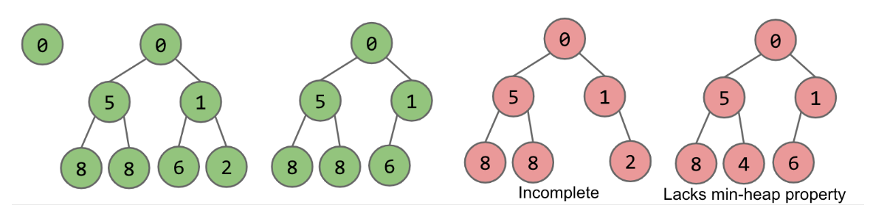
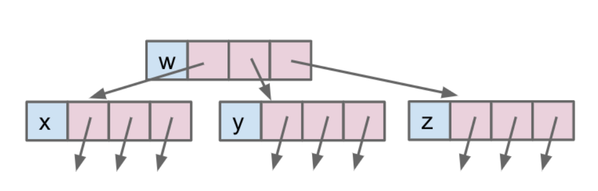
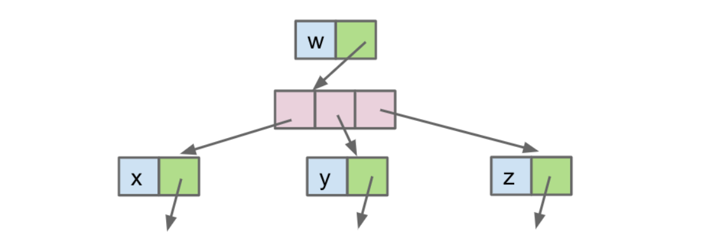
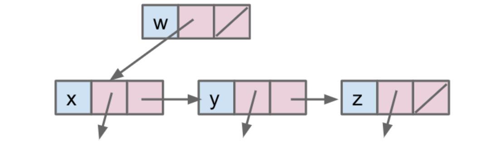
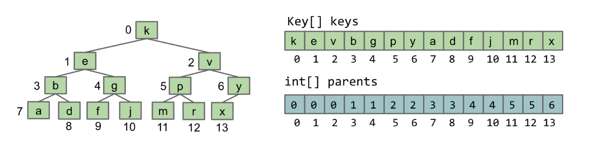
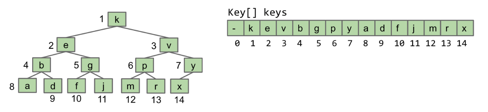
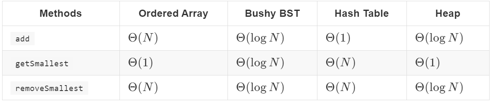

13 Heaps and Priority Queues
13.1 PQ interface
Priority Queue Interface
定义 priority queue为一种抽象数据结构，作为队列，首先应该要有add方法，而且因为队列中成员有一种优先级的关系，所以会有一个smallest成员，我们再定义两个方法来获取和删除这个最小成员，所以又有getSmallest和removeSmallest，最后我们希望随时能够知道这个队列中有多少个成员，故还有一个size方法，到此为止，我们定义完毕。
using PQ
我们当然想知道在哪些情况下我们应该使用这种结构，从他内涵的优先级特性不难想到。当我们需要进行排序操作，或者是获得最值的问题中可以尝试使用。
举个例子，一个系统每天会收到很多无序的信息，我们希望能够对一天下来收到的信息汇总并排序，再抽出排在前面的M条信息。
1 | public List<String> unharmoniousTexts(Sniffer sniffer, int M) { |
Priority Queue Implementation
先前只是定义了这种抽象数据结构的接口，接下来让我们简单思考一下用哪些已知的数据结构来实现他最好，也就是说对于他的每种方法有一个相对小的复杂度
- Ordered Array
add: Θ(N)getSmallest: Θ(1)removeSmallest: Θ(N)
- Bushy BST
add: Θ(logN)getSmallest: Θ(logN)removeSmallest: Θ(logN)
- HashTable
add: Θ(1)getSmallest: Θ(N)removeSmallest: Θ(N)
显然，用BST来实现更合适
13.2 Heaps
Heap Structure
定义一种二分最小堆，遵守两个规则
- 最小堆原则：每个节点小于等于他的两个子节点
- 完整性：只有树的最底部可以缺少子节点，也就是不需要满足有两个子节点，并且子节点优先排布在子左节点上

Heap operation
对于一个这样的堆，首先他需要有一个任何堆都应该有的add方法，此外从他遵守的规则我们很容易想到有一个getSmallest ，所以当然也要有removeSmallest
add：先把需要添加的成员暂时放在堆的最后，再通过交换来放到他该存在的位置getSmallest：返回root对应的值removeSmallest：移除root并改变之后每个成员的位置
Tree Rpresentation
Tree1A
从以前学过的树的知识很直观的想到把每一个节点想成一个子树也就是这样的，这里假设有3个指针指向三棵子树，结构全部由抽象的树实现，有一个缺点是，宽度是固定的
1 | public class Tree1A<Key> { |

Tree1B
当然我们也可以用数组，比如用一个装满Tree的数组，这样宽度就是可变的，但是却不方便遍历了
1 | public class Tree1B<Key> { |

Tree1C
这种不太符合一般认知中的树结构，一个节点的子节点不全都连接到这个节点本身上面，而是在一个子节点上用指针把连他的兄弟节点，再用兄弟节点连兄弟节点，有链表的感觉
1 | public class Tree1C<Key> { |

Tree2
刚才提到的3种的上下级关系很分明，现在来尝试一种没有那么清楚等级关系的方式
请先自行回忆Disjoint Set，ok现在让我们用两个数组来实现这棵树，一个数组按顺序存储每个节点对象储存的key，另外一个数组的index对应的就是对应节点，每个index对应的值则是它的父节点的index，这个就和Disjoint Set一样了。
1 | public class Tree2<Key> { |

观察一下这棵树的结构，我们规定他的顺序是：处于同一级的节点从左到右顺序递增，然后才是下一级，这样就达到了一开始提到的完整性原则，也即优先储存子左节点。
也许你已经发现，parents数组其实有点多余，我们可以用一个数组，数组里每个对象有两个属性，一个是key，另一个是对应的parent index，
Tree3
在前提树是符合完整性原则下用一个数组表示，我们把设置root的index为1，这样的话我们可以直接通过除以二再用Math.round()得到父节点的index
1 | public class TreeC<Key> { |

交换
这种结构下交换的代码很好写
1 | public void swim(int k) { |
13.3 Implementation Consideration
The Implementation
已经知道了如何实现上面那个parent方法，上面那个就是我们用来实现堆的结构
Comparing to alternative implementations

由于Heap的数组会进行resize，所以采用了amortized analyze，对于BST，如果它存储了一个指向Smallest的指针，getSmallest也可以达到1的复杂度。